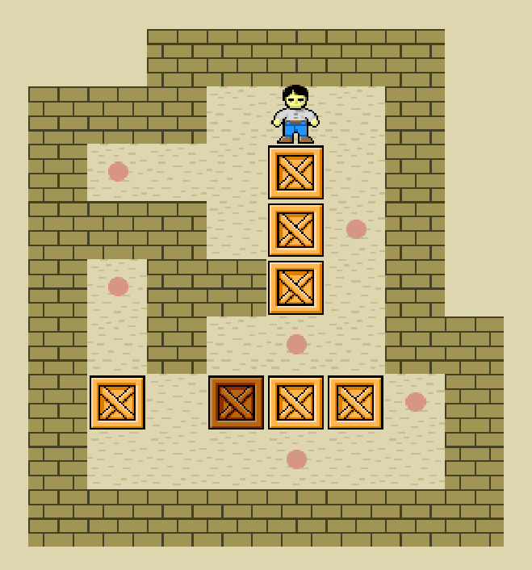
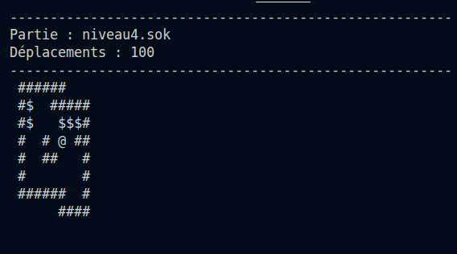
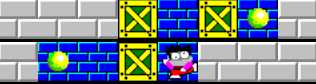
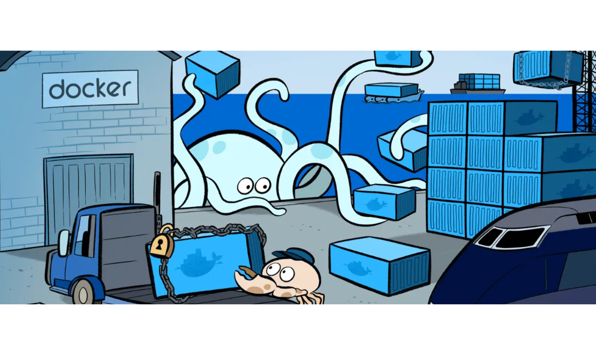
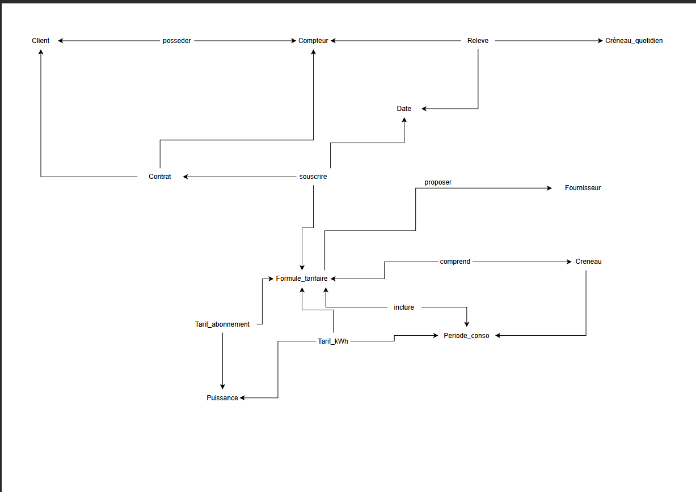
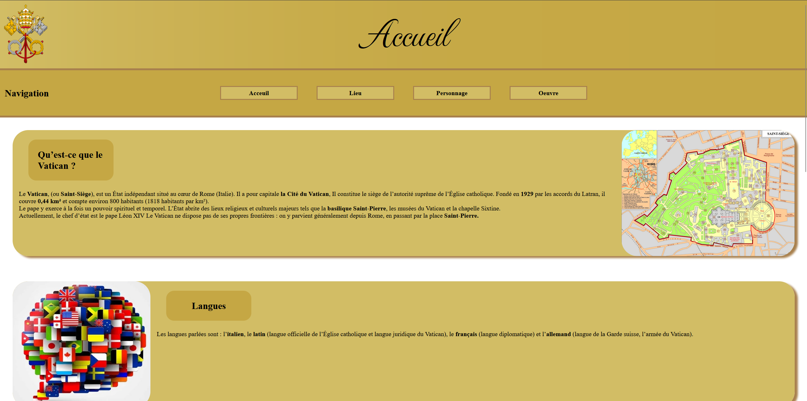
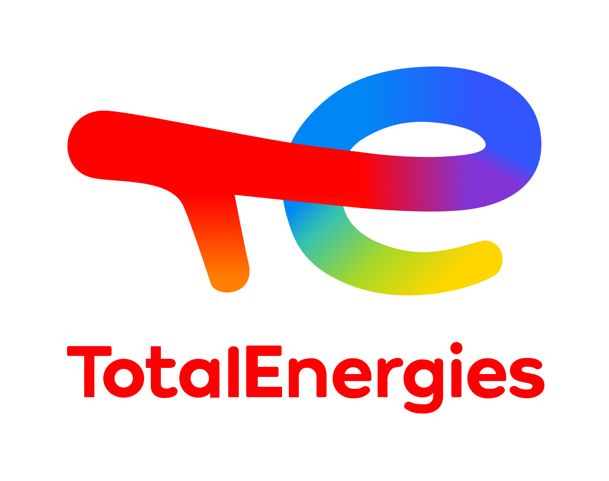

Qui suis-je
À propos de moi
Je m'appelle Tawfik Bouzid, étudiant en première année de BUT Informatique à l'IUT de Lannion. Titulaire d'un baccalauréat général avec les spécialités Mathématiques et Sciences de l'Ingénieur (avec option Mathématiques expertes), j'ai toujours eu une affinité naturelle pour la logique et la résolution de problèmes.
C'est cette rigueur mathématique qui m'a orienté vers l'informatique. En dehors des études, je suis un passionné de jeux vidéo et j'aime passer du temps avec mes amis à faire des activités qui nourrissent autant ma créativité que mon esprit d'équipe.
Je suis actuellement à la recherche d'un stage pour approfondir mes compétences dans le domaine de la data et de l'IA et/ou développement d'application, et découvrir le monde professionnel de l'informatique.
Formation
Centres d'intérêt
Acquisition des compétences BUT Informatique
Mes 6 compétences
Chacune des six compétences du BUT Informatique a été travaillée et évaluée au cours du semestre, à travers des SAÉ, des travaux pratiques et des projets collectifs. Voici les traces et preuves qui témoignent de leur acquisition.
Réaliser un développement d'application
Développement complet du jeu Sokoban : conception de la logique de jeu, gestion des déplacements, des niveaux et de l'interface utilisateur. Ce projet m'a permis de maîtriser la structuration d'un programme, la manipulation de tableaux et la gestion d'états.


Optimiser des applications informatiques
Optimisation du Sokoban : analyse et amélioration des algorithmes de recherche de chemin pour des séries de déplacements passées en fichier d'entrée. Travail sur la complexité algorithmique, réduction des calculs redondants et amélioration des performances globales.


Administrer des systèmes informatiques communicants
Dans le cadre de la SAÉ 1.03, j'ai mis en place une chaîne de traitement automatisée à base de Docker : orchestration de conteneurs éphémères, écriture de scripts Bash pour transformer et trier des données, puis génération automatique de PDFs depuis du HTML via WeasyPrint dans un conteneur dédié.

Gérer des données de l'information
Conception et manipulation de bases de données relationnelles avec Rel DB : modélisation des données, écriture de requêtes (sélection, jointures, agrégations), et gestion de l'intégrité des données. Compétence directement en lien avec mon projet professionnel en data.

Conduire un projet
Réalisation d'un site web pour le Ministère du Tourisme, dans le cadre d'un projet simulant une mission client réelle. Notre équipe a choisi de promouvoir le Vatican : planification, répartition des tâches, respect des délais et livraison d'un produit fini.

Travailler dans une équipe informatique
Présentation collective de la RSE de TotalÉnergies : analyse des pratiques de responsabilité sociétale d'une grande entreprise du secteur énergétique, coordination au sein du groupe, répartition des rôles et restitution orale devant la classe.

Me contacter
Intéressé par mon profil ?
Je suis disponible pour un stage dans le domaine de la data ou de l'intelligence artificielle. N'hésitez pas à me contacter par e-mail.
Tawfik Bouzid
Étudiant BUT Informatique — IUT de Lannion